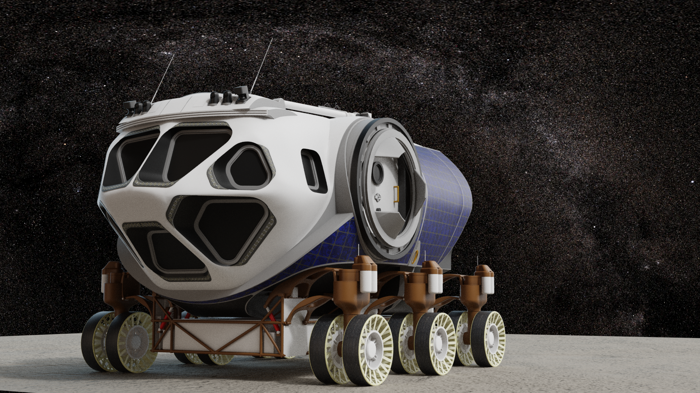

Artemis candidate landing regions · click one to begin

What would it be like to drive across the terrain near a lunar landing site? Explore nine candidate regions near the Moon’s south pole and find places on Earth with similar terrain.
For a guided starting point, choose Try the de Gerlache scenario on the map.